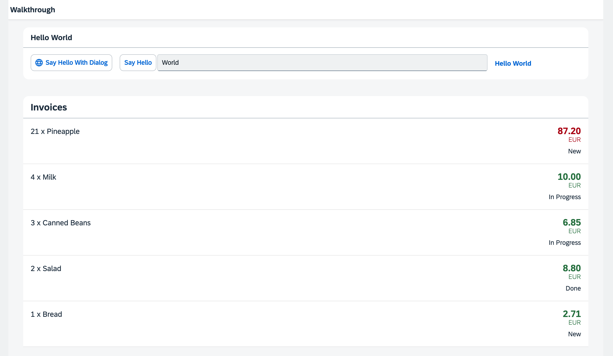

You can view all files at OpenUI5 TypeScript Walkthrough - Step 22: Custom Formatters and download the solution as a zip file.
We add three new entries to the resource bundle that reflect our translated status texts 'New', 'In Progess', and 'Done'. We will use these texts to format the status values 'A', 'B', and 'C' of our invoices when displayed in the invoice list view.
...
# Invoice List
invoiceListTitle=Invoices
invoiceStatusA=New
invoiceStatusB=In Progress
invoiceStatusC=DoneWe place a new formatter.ts file in the model folder of the app, This time we do not need to extend from any base
object, but just return an object with our formatter functions in it. We add a statusText function
that gets a status as input parameter and returns a human-readable text that is read from the resourceBundle
file.
import ResourceBundle from "sap/base/i18n/ResourceBundle";
import Controller from "sap/ui/core/mvc/Controller";
import ResourceModel from "sap/ui/model/resource/ResourceModel";
export default {
statusText: function (this: Controller, status: string): string | undefined {
const resourceBundle = (this?.getOwnerComponent()?.getModel("i18n") as ResourceModel)?.getResourceBundle() as ResourceBundle;
switch (status) {
case "A":
return resourceBundle.getText("invoiceStatusA");
case "B":
return resourceBundle.getText("invoiceStatusB");
case "C":
return resourceBundle.getText("invoiceStatusC");
default:
return status;
}
}
};The new formatter.ts file is placed in the model folder of the app, because formatters are working on data
properties and format them for display on the UI.
In the above example, this refers to the controller instance as soon as the formatter gets called. We access
the resource bundle via the component using this.getOwnerComponent().getModel() instead of using
this.getView().getModel(). The latter call might return undefined, because the view
might not have been attached to the component yet, and thus the view can't inherit a model from the component.
Additional Information:
To load our formatter functions, we use the require
attribute with the sap.ui.core namespace URI, for which the core prefix is already defined in our
XML view. This allows us to write the attribute as core:require. We then add our custom formatter module to the list
of required modules and assign it the Formatter alias, making it available for use within the view.
We add a status using the firstStatus aggregation to our ObjectListItem that will display the status of our
invoice. The custom formatter function is specified with the reserved formatter property of the binding syntax.
There, we use our Formatter alias that holds our formatter functions in order to access the desired function via
Formatter.statusText. When called, we want the this context to be set to the current view
controller's context. To achieve this, we use .bind($controller).
<mvc:View
controllerName="ui5.walkthrough.controller.InvoiceList"
xmlns="sap.m"
xmlns:core="sap.ui.core"
xmlns:mvc="sap.ui.core.mvc">
<List
headerText="{i18n>invoiceListTitle}"
class="sapUiResponsiveMargin"
width="auto"
items="{invoice>/Invoices}">
<items>
<ObjectListItem
core:require="{
Currency: 'sap/ui/model/type/Currency'
}"
title="{invoice>Quantity} x {invoice>ProductName}"
number="{
parts: [
'invoice>ExtendedPrice',
'view>/currency'
],
type: 'Currency',
formatOptions: {
showMeasure: false
}
}"
numberUnit="{view>/currency}"
numberState="{= ${invoice>ExtendedPrice} > 50 ? 'Error' : 'Success' }">
<firstStatus>
<ObjectStatus
core:require="{
Formatter: 'ui5/walkthrough/model/formatter'
}"
text="{
path: 'invoice>Status',
formatter: 'Formatter.statusText.bind($controller)'
}"/>
</firstStatus>
</ObjectListItem>
</items>
</List>
</mvc:View>Instead of a technical status we get now the human-readable texts below the number attribute of the
ObjectListItem that we specified in our resource bundle.